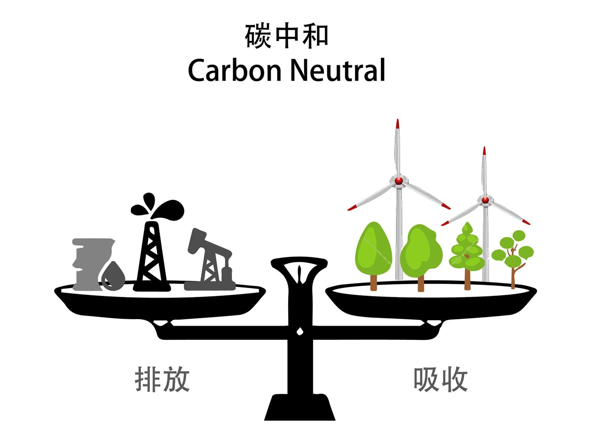
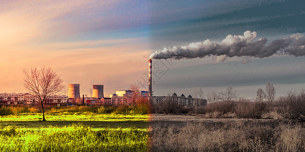
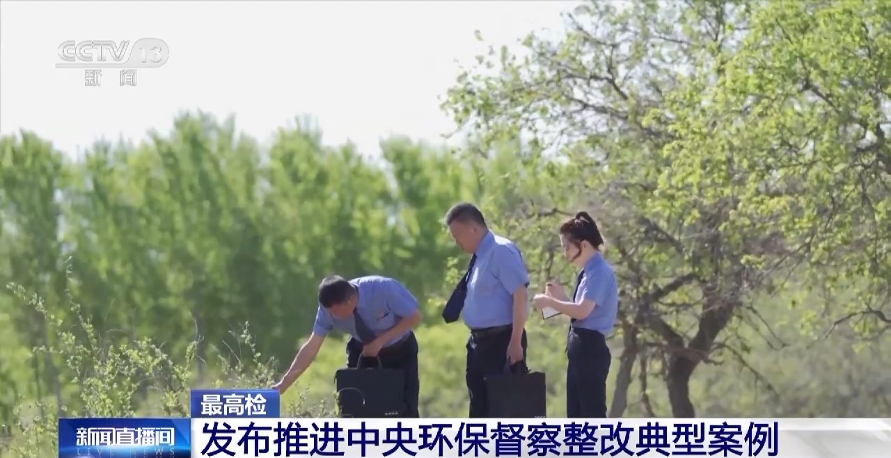

"双碳"目标下的政策路径与实施策略
深入解读碳达峰碳中和"1+N"政策体系，分析各行业减排路径，探讨绿色低碳转型的机遇与挑战。从能源结构优化、产业结构调整到技术创新驱动，全方位解析实现双碳目标的战略部署。
查看完整解读
深入解读碳达峰碳中和"1+N"政策体系，分析各行业减排路径，探讨绿色低碳转型的机遇与挑战。从能源结构优化、产业结构调整到技术创新驱动，全方位解析实现双碳目标的战略部署。
查看完整解读
全面解读蓝天、碧水、净土三大保卫战的具体措施，包括PM2.5和臭氧协同控制、重点流域水环境治理、土壤污染风险管控等关键任务，推动生态环境质量持续改善。
查看完整解读
碳达峰是指二氧化碳排放量达到历史最高值后开始下降的转折点。碳中和是指通过植树造林、节能减排等形式，抵消自身产生的二氧化碳排放，实现净零排放。我国承诺2030年前实现碳达峰，2060年前实现碳中和。
企业需要通过全国排污许可证管理信息平台提交申请，准备材料包括：营业执照、环评文件、污染防治设施信息等。生态环境部门受理后进行审核，符合条件的颁发排污许可证。整个过程通常需要在30个工作日内完成。
根据《建设项目环境影响评价分类管理名录》，可能造成重大环境影响的项目需要编制环境影响报告书，轻度影响的编制报告表，影响很小的填写登记表。具体包括工业、交通、水利、农林、社会服务等各类建设项目。
生态保护红线内原则上禁止开发性、生产性建设活动。允许的有限人为活动包括：必要的科学研究、生态修复、原住居民基本生产生活、适度的生态旅游等，但必须符合相关法律法规规定，不得破坏生态功能。